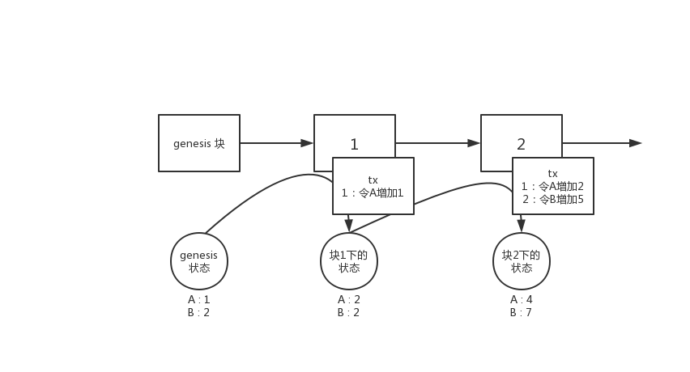

SubstrateGuide
Substrate 入门系列文章，发于笔者知乎专栏 《链块与分散的数据》，主要用于介绍Substrate 的一些基础入门，强调介绍Substrate的设计与使用。
Substrate 入门 - 环境配置与编译- （一）
substrate目前已经趋近成熟，因此可以比较系统的对Substrate进行介绍。
本文首先介绍substrate的依赖与编译过程，以此管中窥豹了解substrate的概况。
因笔者的开发环境是ubuntu/deepin/debain，因此后文命令皆基于这个环境下。
一 前言
截止目前为止（2019年12月1日，提交33476f08b3400a07fd7c69cd5bf4ad8f47f11373），substrate的README已经出现比较大的改动，所有文档集中到了substrate的官方文档中 substrate.dev。而本身对于环境的配置（linux/mac os）过程已经迁移到了脚本https://getsubstrate.io中，即该链接。在这个链接中的介绍为：
curl https://getsubstrate.io -sSf | bash -s -- --fast
但是现在的这种配置方式已经把很多细节隐藏了，且后续执行的命令--fast实际上把substrate下载到了一个temp目录中进行编译并安装到了cargo命令目录下，实际上并不方便想要探究substrate的开发者，因此本文将跳开脚本，把本身配置环境与编译的过程重新介绍。
二 环境配置
以下过程实际和脚本 https://getsubstrate.io/index.html相同，因此若有疑问可参考脚本本身的内容。
环境配置分为两个部分：
- 依赖库
- rust编译链
其他linux发行版，mac os可以对应进行参考
1. 依赖库
apt install -y cmake pkg-config libssl-dev git gcc build-essential git clang libclang-dev
在依赖库中大部分都是正常的编译工具，这里重点介绍以下libssl-dev。这个库实际上就是提供ssl的支持，在substrate中用于 Libp2p 与 websocket 这两个库的编译依赖，提供ssl保护。因此对应与其他发行版（如centos，redhat等）就是提供类似openssl的编译依赖。
在同一发行版的不同版本上编译后需要在另一个版本上运行时（例如在ubuntu 17.04上编译，把执行文件拷贝到ubuntu16.04上），尤其需要注意这个库（ssl）的动态链接依赖。例如在ubuntu 17.04默认的openssl库使用的是 openssl 1.1 以上的版本，而 ubuntu 16.04 使用的时 openssl1.0 版本。因此把ubuntu17.04编译的版本放到16.04上会出现动态链接库不匹配的问题。
若需要在ubuntu 17.04及以上版本编译出能在16.04版本上运行的执行文件，可以在编译环境下装好执行环境对应的openssl版本，然后使用
export OPENSSL_LIB_DIR="<you path>"
export OPENSSL_INCLUDE_DIR="<you path>"
导出这两个环境变量，再进行编译。
ps：在脚本中对于arch系指定的openssl版本时 1.0 的，因为笔者不用arch系的linux，尚不可知为何parity团队要指定这个版本。若需要探究的话可参考到 rust-libp2p的相应需求。
rust 编译链
rust的安装简单得多，首先按照rust官网装好rust环境，确保有rustup和cargo命令后：
rustup update nightly # 安装 nightly 编译链
rustup target add wasm32-unknown-unknown --toolchain nightly # 对 nightly 编译链添加 wasm 编译target
这里说明：
实际上自rust stable 1.38之后 wasm 的这个target就已经可以提供给stable了，但是由于substrate改变了其编译wasm的方式，是在substrate的代码中指定了使用nightly编译wasm，因此这里如果只给stable添加wasm32-unknown-unknown是没有用的，必须先提供nightly编译链，再对nightly添加wasm的target。
在该版本的substrate中已经不需要在添加wasm-gc做wasm的压缩。（windows的还是看到了这个命令，笔者怀疑是substrate的文档还没有改）
三 编译
首先讲substrate项目拉下来
git clone https://github.com/paritytech/substrate.git
参照之前笔者的文章，这里建议导出一个环境变量：
export WASM_BUILD_TYPE=release
在这个环境变量下编译出的wasm才是以release模式编译，否则可能影响出块。
因此进入substrate目录后
cd substrate
编译可以采用
cargo build
# 若刚才没有导出 WASM_BUILD_TYPE 可以在这里执行以下命令强制设定
# WASM_BUILD_TYPE=release cargo build
这里首先说明，在cargo下：
cargo run -- <参数> # 注意这里有两个横杆 --
# 等于
cargo build && ./target/debug/<项目执行文件> <参数>
# 而 release编译
cargo run --release -- <参数>
# 等于
cargo build --release && ./target/release/<执行文件> <参数>
对于substrate而言，执行
cargo run -- --dev
等于
cargo build && ./target/debug/substrate --dev
由于substrate项目编译后（cargo build）当前会在target目录下生成多个可执行文件，因此请依据自己当前的需求执行。
注意的点：
-
wasm是否以release编译
查看
target/<debug/release>/wbuild/node-runtime/node_runtime.compact.wasm的大小，若其大小是1.3M左右，可确定是以release编译，若是8M以上，则一定是以debug编译，此时建议设置好相应环境变量重新编译。 -
编译后的执行文件
编译后产生的执行文件有4个
- substrate # 即 substrate的node项目执行文件，源码位于
bin/node，研究substrate的基础入口，cargo run 执行的文件即为该文件 - node-rpc-client # 与substrate node进行交互的rpc执行文件，源码位于
bin/node/rpc-client下，注意这个和node交互，不是与node-template交互 - node-template # 精简版的node，源码位于
bin/node-template，与node相比去除了大部分runtime模块，可最为最精简链运行 - subkey # 用于生成一些公私钥的工具，源码位于
bin/substrate
- substrate # 即 substrate的node项目执行文件，源码位于
对于substrate的研究，只需要关心node项目即可，不擅长js的，可用辅助使用node-rpc-client用来发交易。
其他
在substrate的官方脚本中，后续操作还安装了https://github.com/paritytech/substrate-up这个项目，该项目是用来生成依托于substrate框架的链的一个模板生成工具。由于substrate更新很频繁，这个工具早已更不上变化，因此不建议安装。
总结
由于substrate官方的安装脚本隐藏了很多细节，且没给予用户一些选择的权利，因此本文不建议使用脚本安装，而是梳理了当前substrate的环境配置与编译，并解释了各个步骤的含义。因此用户可根据本文的解释结合自己的环境情况进行substrate的编译环境配置。
Substrate 入门 - 运行与调试 -（二）
上一篇文章中介绍了substrate的环境配置与编译，本文描述如何运行节点并对其进行调试。
当能够对一个程序进行调试时，就相当于掌握了如何探究其原理的工具，剩下的只需要毅力和时间了。因此掌握调试方法是很重要的。
运行节点
对于学习Substrate而言，一开始只需要能够单节点运行即可。接上一章，能够使用cargo build以后，执行
cargo run --bin substrate -- --help
# 等价于 ./target/debug/substate -- --help
请大致浏览一下help信息，其中很多启动指令是很重要的。这里先大致看过来有一个印象。
ps：注意这里指定了--bin substrate，因为Substrate编译后会有多个执行文件，但是我们目前只需要了解substrate即可。
运行单节点
这里推荐运行单节点的方式为：
cargo run --bin substrate -- --dev -d .sub --execution=NativeElseWasm
其中
--dev是运行单节点的命令，具体内容请看help-d是--base-path的简写，用于指定数据跟目录的，请注意若不指定这个目录，会默认把数据放在用户的目录下，linux系的操作系统将会放于~/.local/share/substrate目录下，mac os 位于~/Library/Application Support/substrate与windows 位于%APPDATA%\substrate（例如c:\User\<you account>\AppData\Roaming\substrate）下。具体原理请参见这个库app-dirs--execution是节点采用的执行方式，这里采用NativeElseWasm，尽量以Native的方式运行。Native与Wasm的关系请参见笔者之前的文章，后续也将专门花一篇文章讲解。这里为了调试请以Native的方式运行。
运行后，会出现以下日志：
2019-12-02 21:34:38 Running in --dev mode, RPC CORS has been disabled.
2019-12-02 21:34:38 Substrate Node
2019-12-02 21:34:38 version 2.0.0-33476f08b-x86_64-linux-gnu
2019-12-02 21:34:38 by Parity Technologies, 2017-2019
2019-12-02 21:34:38 Chain specification: Development
2019-12-02 21:34:38 Node name: squealing-volcano-7235
2019-12-02 21:34:38 Roles: AUTHORITY
2019-12-02 21:34:41 Initializing Genesis block/state (state: 0xcfa1…1f33, header-hash: 0x7aed…4a2a)
2019-12-02 21:34:41 Loading GRANDPA authority set from genesis on what appears to be first startup.
2019-12-02 21:34:42 Loaded block-time = BabeConfiguration { slot_duration: 3000, epoch_length: 200, c: (1, 4), genesis_authorities: [(Public(d43593c715fdd31c61141abd04a99fd6822c8558854ccde39a5684e7a56da27d (5GrwvaEF...)), 1)], randomness: [0, 0, 0, 0, 0, 0, 0, 0, 0, 0, 0, 0, 0, 0, 0, 0, 0, 0, 0, 0, 0, 0, 0, 0, 0, 0, 0, 0, 0, 0, 0, 0], secondary_slots: true } milliseconds from genesis on first-launch
2019-12-02 21:34:42 Creating empty BABE epoch changes on what appears to be first startup.
2019-12-02 21:34:43 Highest known block at #0
2019-12-02 21:34:43 Using default protocol ID "sup" because none is configured in the chain specs
2019-12-02 21:34:43 Local node identity is: QmPx8ErgDnK2yzcNzWWZfcpA5jG5BiqHnYhxj8uP78R1wP
2019-12-02 21:34:43 Starting BABE Authorship worker
2019-12-02 21:34:43 Grafana data source server started at 127.0.0.1:9955
2019-12-02 21:34:45 Starting consensus session on top of parent 0x7aed7beac8e270a7c1b94c388bf2dd458a583793eb1cf6cbdaac5c2b53bc4a2a
2019-12-02 21:34:47 Prepared block for proposing at 1 [hash: 0x9ef353fac64fb410da9dcddb413bc32605be0bddc37600f4308a8fe16c67cd48; parent_hash: 0x7aed…4a2a; extrinsics: [0xdd07…0f07]]
2019-12-02 21:34:47 Pre-sealed block for proposal at 1. Hash now 0x7092bd4729d239cc50ddea5ebca686956747d429ebc5fdd04437eb3d1b2c5144, previously 0x9ef353fac64fb410da9dcddb413bc32605be0bddc37600f4308a8fe16c67cd48.
2019-12-02 21:34:47 New epoch 0 launching at block 0x7092…5144 (block slot 525097895 >= start slot 525097895).
2019-12-02 21:34:47 Next epoch starts at slot 525098095
2019-12-02 21:34:47 Imported #1 (0x7092…5144)
2019-12-02 21:34:48 Idle (0 peers), best: #1 (0x7092…5144), finalized #0 (0x7aed…4a2a), ⬇ 0 ⬆ 0
2019-12-02 21:34:48 Starting consensus session on top of parent 0x7092bd4729d239cc50ddea5ebca686956747d429ebc5fdd04437eb3d1b2c5144
2019-12-02 21:34:48 Prepared block for proposing at 2 [hash: 0x401eaa5aad96fa270be3e8441e8f9b260496bc45594a314975be0a0e209bcd0c; parent_hash: 0x7092…5144; extrinsics: [0x147a…25aa]]
2019-12-02 21:34:48 Pre-sealed block for proposal at 2. Hash now 0x0c173a3e655a50bbc93998d15ab8adedac76bc751e9d8eea173132f51b8731eb, previously 0x401eaa5aad96fa270be3e8441e8f9b260496bc45594a314975be0a0e209bcd0c.
2019-12-02 21:34:48 Imported #2 (0x0c17…31eb)
按CTRL+C可以中断进程退出。
请注意，只有当日志中出现以下日志时
Starting consensus # 共识准备
Pre-sealed block for proposing at <块高>, 区块hash, 父区块hash, 该区块中的交易hash # 预打包区块，其中的交易
Imported #<块高> # 区块落盘，一定要看到这一条才表示区块出块流程正常进行
才算区块正常出块。
其中，若编译时使用产生的WASM文件是debug（参见上一篇文章）时，或者当前的电脑cpu性能过于弱时，可能会产生
Discarding proposal for slot {}; block production took too long
的日志。
请注意如果确定只是因为当前环境的cpu性能过弱时，可以采取修改出块时间的方式先暂时回避这个问题
文件：bin/node/runtime/src/constants.rs 中，修改
# 请详细参见附近的注释，该常量用于控制出块时间间隔，因此当 took too long 的时候把出块时间加长
pub const MILLISECS_PER_BLOCK: Moment = 3000;
这个常量，将其修改得大一些，使得出块时间变长，这样第一次加载环境的时候就不会took too long导致无法出块了。
请注意修改了这个常量后一定要重新编译，对于初学者而言若还搞不清楚其他情况时，请直接将之前生成的数据目录（-d指定的目录）直接删除，再重新运行节点
调试
笔者使用Clion进行开发，因此这里只介绍clion调试的方式，使用gdb的开发者直接操作即可。
首先在clion中先设置编译配置：
然后点击左上角的“+”，选择cargo command

然后在以下位置配置相应的命令：
Command的部分命令和之前启动命令一致，只需要把cargo去掉即可，因此也就是说这里的Command就是平时的启动命令，可以根据自己本身的命令进行配置，注意如果在下断点到runtime内部的时候，execution一定是要Native或者NativeElseWasmEnvironment variables环境变量部分请配置上WASM_BUILD_TYPEWorking directory配置上substrate的根目录
以上配置好了点Ok确定后，原来添加配置的部分会默认显示刚刚配置好的这个启动命令。
接下来下断点，对于初学者，下断点最好的部分位于每个块都会执行的一个部分：设置时间
因此我们把断点下在frame/timestamp/src/lib.rs 第 145行：
该部分即时每个块都会设置出块时间的地方。使用gdb的开发者同理，找到这个文件的这个地方下断点即可。
设置好断点后，即可点击右上角像虫子一样的按钮开始运行调试（建议先清空数据目录）
启动调试后，如果正常一会之后将会在断点处停下：
请注意左下方的调用栈，这即是最能帮助开发者了解代码运作过程的信息源。从调用栈中可以很快速了解很多信息。
而领边的Variables提供很多当前这个栈中数据的信息，对于debug相当有用。
日志
substrate使用了rust默认的日志接口，因此在substrate中看得到这样的日志：
#![allow(unused)] fn main() { info!(target: "babe", "Creating empty BABE epoch changes on what appears to be first startup."); }
请注意info!的第一个参数是target:，而不是日志内容。这个是用于日志标签分类打印。由于substrate使用的日志记录器是env_logger，并且substrate编写了一些运行时解析的代码
client/cli/src/ib.rs:L965
#![allow(unused)] fn main() { fn init_logger(pattern: &str) { use ansi_term::Colour; ... if let Ok(lvl) = std::env::var("RUST_LOG") { builder.parse_filters(&lvl); // 这里，设置了日志filter } ... } }
因此启动时可以通过这个环境变量设置日志的过滤内容，如上面那个日志的target是"babe"，则启动时可以设置：
RUST_LOG=warn;babe=debug cargo run --bin substrate -- --dev -d .sub --execution-NativeElseWasm
# 或者
RUST_LOG=warn;babe=debug ./target/debug/substrate -- --dev -d .sub --execution-NativeElseWasm
同理，在clion的启动配置的Environment variables 中也可以配置这个环境变量。这样启动的节点就会
- 其他日志只打印 warning 级别的日志
- 对于 target 是 babe 的日志，会打印 debug 级别的日志
因此通过这种filter的形式，可以控制日志的打印，这样对调试节点及学习substrate有相当大的好处。
总结
本文主要说明了如何启动一个substrate节点，及启动节点后如何对节点进行调试，以及如何对节点中的日志进行filter以便于调试。
Substrate 入门 - 具备状态的链 -（三）
本文首先介绍substrate的模型基础。在能理解了“链的状态”和“交易”关系后，在此模型下才可深入Substrate的设计当中。
结论
首先先表述结论：Substrate的数据模型与以太坊一致，是基于MPT（Merkle Patricia Tree）的“全历史世界状态”模型。
这里展开讲一点：
当前区块链用于对业务进行建模的模型主要有两类：
- UTXO 模型，即比特币及其分支的模型
- 状态模型，即以以太坊为代表，包含eos及其他区块链等以记录状态为主的模型
因为当前主流描述业务的方式主要还是以状态迁移的模型去建模业务，因此状态模型的区块链能更容易支持更广泛的场景。
本系列只介绍状态模型，UTXO模型请参照笔者之前关于比特币的相关文章。
状态区块链
对于没有接触过状态区块链的开发者而言，首先请记住以下一些基础概念：
- 当前状态是从genesis（即第0块，初始状态）开始，通过交易或其他方式产生了状态变更，不断累计出来的。
- 状态并不是储存块中，而是节点自身独立维护的。
- 块中记录的是“状态迁移”的方式

如上图所示即是一个链的状态变化的过程。
比如在genesis的时候，状态为A:1 B:2 而经过块1的过程后，通过交易（tx）或其他因素，将A的状态修改成了2，因此在块1下的“世界状态”就变为了A:2 B:2。块2以此类推。
因此实际上块中并不是记录当前的状态，而是节点自己本地维护了一个“世界状态”。这个状态就是存在本地的数据库中。而块中保存的时“状态迁移”，“状态迁移”就是交易（或其他因素），节点同步/执行了一个区块后，通过区块中含有的迁移状态的方式（即是在执行这个区块），修改自己的本地状态，从而当一个块执行完毕后，本地当前的状态即为这个块下的状态。
而对于当前状态模型的链而言，一般情况下会具备如下的特性：
- 最新块（最高块）下的状态即为当前的状态，在这个状态下可以获取当前所有对象的状态。
- 块中含有对这个块下的状态的证明（即状态的统一性经过了节点间共识）
- 可以通过任意一个历史的区块，取到在这个区块下的状态（如当前最高块已经是2，而通过1块中的相关信息可以取到
A:2而不是最高块下的A:4）
这3个条件中只有1是必须满足的，往后越达成一个条件，需要付出的代价就要更多。若能满足这3个条件，即是“全历史世界状态”。
当然这里的词“全历史世界状态”是笔者自己造的，因为在以太坊的那个时代，还只有“世界状态”的概念。而实际上以太坊的“世界状态”是将每一个块的那个时刻的状态都做了“快照”，可以恢复到任意块的时候下的状态，也就是将全部的“状态变化历史”都保存下来的方式，因此笔者对这种模型命名为“全历史状态”。但是显然，这种方式将会将所有过去的历史都存下来，因此会造成数据量十分庞大。因此这种方式是状态区块链的一个极端。
而牺牲第3个条件，保留状态证明与只保留最新状态是一种权衡。而第3点就不再交由链来维护，而交给第三方的附属设施维护，如中心化数据库，区块链浏览器等等。
若连第2个条件也不用，则是状态模型的另一种极端，这种极端一定情况下牺牲了共识状态安全性。这种方式带来的好处是实现上比较简单。这即是eos的模型。
MPT 实现的世界状态
由于Substrate采用了和以太坊一样的模型，因此满足上述的3个条件。在Substrate中MPT简称为trie。
对于MPT实现的原理这里不进行详细描述。简单来说MPT的实现和git，IPFS中的IPLD模型等原理上都是一致的，用一句话描述就是：
使用DAG的方式，只记录每次变更后的索引（hash）。
如下图所示：

例如在上文提到的状态A:1 B:2，将A，B分别看做两个key，在MPT中key就是树的路径，而1,2是key对应的值，在MPT中就是叶子节点。因此A:1 B:2 变更到A:2 B:2的这个过程中，对应到上图相当于：
- 从 root -> 2 -> value2 相当于记录了
A:1，从root->3->value3的过程相当于记录了B:2 - 从genesis到 block1 的过程中，A的状态发生了变化，从1变成了2
- 在MPT 中由于A的值发生了变化，因此MPT生成了一个新的叶子节点代表A的新状态，然后从叶子节点重新生成一个新的索引路径，即图中的
value2' -> 2'-> root'的过程 - 而在生成新路径的过程中，由于B的状态没有发生变化，因此在生成新的路径的过程中，直接索引了B的老路径（即图中的虚线）。
- 因此如上图所示，通过新的树根
root'索引到的A和B的值分别是A：2（即新的A的状态）与B：2（即老的B的状态）
如以上过程所示，每一个新的树跟记录的这个树根下状态的索引，因此每一个树跟即是每一个状态的DAG的起点，通过这个起点，可以获取到所有的状态。
每个区块都会含有状态变更，而每次变更即是通过以上类似过程生成一个新的树根，这个根root在以太坊及Substrate中被称为状态根 state_root，放入每一个区块的区块头中，作为当前这个区块进行共识的状态证明。而通过以上方式也可以看出，只要从任意区块中取出状态根，那么就可以获取到这个状态根下那个时刻的所有状态的值。（对于相当同的key A，通过 root 索引出 value2，通过 root' 索引出 value2'）
因此，MPT这种数据结构描述的世界状态，满足上述所说的3个条件。
另一个角度
抛开以上原理不谈，我们可以将trie看成一个K-V数据库，这个数据库通过给予的Key能够获取到对应的Value。只不过这个k-v数据库通过给予一个root可以索引出在这个root的那个时刻下的对应数据。
也就是说trie实现的链上状态就是一个带快照的k/v数据库。每一个块就是对当前数据库全部数据的快照，块的时间戳代表了那个时刻下的数据状态，通过块中的状态根可以获取那个时刻下的数据。
而在打包执行当前区块时使用的root即是上一个区块的root，也就是打包区块时取当前最新的状态。
在Substrate中对于Runtime层而言，提供的接口即是
- get(key) -> value
- set(key, value) / remove(key)
这样的接口对于Runtime而言，可以直接将trie树看做一个key/value数据库即可，屏蔽了所有的trie树细节。
因此对于初学者而言，若目前还不是很容易搞清楚trie树的实现细节，那么就不用关心，只需要记住Substrate的读写数据模型是key/value数据库即可。
总结
实际上状态模型区块链即使通过各种实现方式，能够在每个块下记录这个块当前的状态（key/value）。只不过使用mpt树实现的“全历史世界状态”是包含上文提到的3种性质的一种实现，这是一种极端，包含了证明与历史，但对应的也会带来数据的膨胀。
Substrate采用的是这种MPT树实现的状态区块链模型。
Substrate 入门 - 项目结构 -（四）
在开始讲解Substrate的内容之前，还需要补充一个当前Substrate的项目结构。之所以这里强调“当前”是因为Substrate从之前的结构到现在已经发生了巨大的变化，如果不重新再介绍以下，后续的文章介绍起来就会有一些麻烦。
笔者在一年前已经写过一个Substrate的项目结构《Substrate 设计总览 （二）》的介绍，但是截止目前项目的结构几乎已经全部变了。因此重新进行介绍。（在看本文前最好先了解了Substrate的设计总览：《Substrate 设计总览》）
本文所基于的Substrate提交为：a98625501be68cc3084e666497c16b111741dded，即2019年12月21日的提交。
core->primitives + client
以前的core目录包含了所有的链的功能模块的部分，也就是所谓的Substrate的框架主体内容。在现在的版本中，拆成了primitives + client两个部分。
其中：
primitives：元语，赋予了新的含义，用于定义一条链中很多基础设置的模块。实际上这个归类也是比较笼统的，但是主要还是用来定义用的，举例来说：primitives/core中定义了密码学类型如ed25519，sr25519等，定了hash，定义了H160，H256，H512等长度类型，primitives/runtime定义了“Runtime”中需要用到的基础类型，如区块头Header，区块Block，交易体extrinisic，区块头附带的信息“digest”，“Runtime”编写过程中用到的一些基础工具，如错误处理DispatchError，兼容多种类型签名的MultiSignature，Runtime中的随机数，交易合法验证，offchain的一些类型定义等等primitives/consensusSubstrate提出的新共识的核心aura，"babe"，以及“pow”的一些类型定义，注意这里只是一些定义以及对于Runtime的api接口，实现在client/consensus对应的模块下。primitives/apiruntime的api的工具宏定义primitives/trie对 MPT 的包装，MPT见上文介绍，实现在trie-db这个库中primitives/std和primitives/io原来的sr-std和sr-io，用于提供Runtime中的对于wasm编写的支持以及runtime访问trie的接口。- 等等内容
而对于另一个模块client而言：
client是对于很多模块的功能实现以及集成功能模块组件client/api就是对于runtime api 调用包装的实现client/consensus是对共识模块的实现。client/network是对网络p2p的实现，底层使用Libp2pclient/state-db是对每个块提交到MPT的过程的管理client/service是对许多功能模块的集成，例如网络模块，交易池，rpc等等，service相当于启动了这些模块并持有这些模块的引用client/cli是对命令行的解析并根据相应的参数配置service- 等等... 由于本系列主要是为了介绍使用substrate，而不是讲解substrate怎么实现，所有就不必说的很细致了。
所以在今后的文章中介绍primitives/client 即代表着这些是Substrate框架内的代码，若要修改，需要进行fork
ps:（这是不严谨的说法，实际上也可以引用primitives，自己实现client，只所以这么说是因为client可以看做Substrate定义的基础结构的一种实现，当然可以独立进行另一种client的实现。但由于当前的client里面是一种实现，因此里面的模块都是互相关联的，很难只修改其中某个组件，如果需要沿用Substrate的实现但是需要修改其中的某些实现，那么只能fork修改了。）
srml -> frame
参见笔者之前的《Substrate 设计总览》与《Substrate 设计总览 （二）》，应该知道了Runtime的概念，与Substrate中实现Runtime的模块srml（Substrate Runtime Module Library）。在新版中，srml命名为了frame。
对于frame而言，模块之间没有很大的迁移，基本沿袭了原来的命名与结构，只不过新增了很多的runtime module 模块。
如理解了这两篇文章的内容，那么应该可以理解frame中除了“system”之外，都是可以由开发者自由实现的，实际上使用Substrate链编写的应用链的核心部分就是开发自己的Runtime Module。编写自己的Runtime Module不会写的时候，就需要去模仿frame模块中这些模块的编写技巧。其中提供了很多最佳实现这类的东西。
node + node-template + subkey + 其他 -> bin
对于上文的 primitive，client或者再加上frame中的system共同构成了Substrate的框架，而对于新版本中的bin则是对Substrate框架的使用案例（一种实现），因此**bin中的内容就是Substrate的框架外**的部分。
在新版本中把原来的node，node-template等全部移动到了bin中，代表这些模块是可以进行“可执行文件”的入口。因此调试也好，研究数据流流转也好，都是从这个入口开始。
所以在今后的文章中，介绍bin中的代码，即代表着这是使用者可以自由进行定制的部分，可参考bin中的一些组件进行修改。而bin中的案例即是如何把runtime和service组合在一起的案例。
对于本系列而言，只用参考node的实现就够了，因为它的实现是最全面的。
Substrate 入门 - 区块头 -（五）
关于“区块链”的块链结构这里就不再赘述，听过这个名词的应该都多少在心里能想到大概的样子。因此本文直接开始从Substrate的区块头结构开始讲解。
总体来说，substrate的卖点就是一个区块链框架，因此实际上对于区块头，交易体等一系列区块链中的基本元素而言，都是可以自行定制的，并非是固定的结构体。然而由于区块头中含有的一些证明及一些属性与区块链的运行过程（基于状态），共识（共识证明）等方面是“强耦合”的，因此一般情况下在Substrate中使用的区块头都直接使用了Substrate默认提供的，极少有需求需要对其进行更改。
substrate核心与用户可在框架下编写的模块的分界线
参考本系列第四篇《Substrate 入门 - 项目结构 -（四）》中的描述，应该清楚的知道，位于/bin目录下的代码属于框架外的，可以参考的，位于primitives及client里面的代码属于Substrate框架内的，一般情况下不改动的。
因此位于不同的文件夹下即是Substrate框架与用户编写代码的分界线。
区块头
总所周知，在区块链的块结构中，一个块由区块头（block_header）与该区块下的交易体共同构成。
而共识实际上共识的就是区块头，区块头就是对这个区块信息的摘要与证明。
Substrate的区块头
1. 框架内
Substrate提供了一个Header的模板，位于/primitives/runtime/src/generic/header.rs文件中：
#![allow(unused)] fn main() { pub struct Header<Number: Copy + Into<U256> + TryFrom<U256>, Hash: HashT> { /// The parent hash. pub parent_hash: Hash::Output, /// The block number. #[cfg_attr(feature = "std", serde( serialize_with = "serialize_number", deserialize_with = "deserialize_number"))] pub number: Number, /// The state trie merkle root pub state_root: Hash::Output, /// The merkle root of the extrinsics. pub extrinsics_root: Hash::Output, /// A chain-specific digest of data useful for light clients or referencing auxiliary data. pub digest: Digest<Hash::Output>, } }
这里简单对这个模板做介绍：
- parrent_hash：父区块hash，这里就不多做解释了，这是“区块链”概念的根本
- number：区块高度，对于状态链必须，对于utxo链非必须（指代类似Bitcoin这类模型，而不是使用状态来模拟utxo），总体来说如果记录在header里面在其他部分的设计下可以简化一些，否则其他组件就会设计的比较复杂
state_root：状态根，参考本系列《Substrate 入门 - 具备状态的链 -（三）》，是对区块执行后状态变更的证明extrinsics_root：交易根，代表了该header下的区块体中交易的内容与顺序，是对区块信息的摘要digest，区块附加信息。digest翻译名“摘要”，但是这里笔者觉得这个类型更像是对区块信息的一些附加信息的集合，当前Substrate的文章及官方文档几乎都没对这个属性的剖析，但是其实它是相当重要的一个组成部分，后文会做分析。
2. 框架外
我们浏览一个模板范例bin/node中的例子：
文件/bin/node/runtime/src/lib.rs L528 左右
#![allow(unused)] fn main() { pub type Header = generic::Header<BlockNumber, BlakeTwo256>; pub type Block = generic::Block<Header, UncheckedExtrinsic>; // Block 引用了上面Header的结构，UncheckedExtrinsic是交易，后续文章会介绍。因此Block中是可以看得到Header的结构，而这个结构是由用户定义了传入 }
L112行左右
#![allow(unused)] fn main() { impl frame_system::Trait for Runtime { // ... type Header = generic::Header<BlockNumber, BlakeTwo256>; // 可以看到这里定义runtime内部Header的结构与上面对于Header的定义是一致的。 // ... } }
我们已知 node 中是用户编写的代码，因此我们可以注意到，用户代码中的Header是可以由用户自由定义的，包括并不限于如下改动：
-
保留Substrate的框架内默认Header模板，即
generic::Header，也就是位于/primitives/runtime/src/generic/header.rs中的定义：- BlockNumber 是用 u32, u64，抑或时u128 等
- 对于BlockHash的计算使用的hash函数（这里是
BlakeTwo256）
-
重新使用自己定义的Header
- 用户可自己定义自己的Header结构，一般情况下不适用，因为Header实际上和共识等组件是强耦合的，开发者唯有在知道自己该改的情况下才需要走这条路。
简单分析
以上总结了在Substrate框架中Header的定义，可以看出，由于Substrate的框架属于状态类型的链，因此其提供的Header的模板是偏向于状态类型的定义，而且其Header类型提供的信息实际上和以太坊十分接近，不过一个很大的不同是将以太坊的收据根receipt_root移除了。
不过相对应的，Header中提供了一个新的类型digest，实际上这个类型是一个能附加很多额外信息的类型，例如对于收据根就可以附加在这里的，比如是pow的链需要提供nonce和bits这类的难度信息也可以附加到digest，除此之外其还提供了pos中出块者的签名，共识证明信息等等相当重要的信息。接下来做简单介绍。
digest 的介绍
前文已经说过，digest更像是对于该区块其他所有附加信息的一个集合，现在简要分析如下：
见文件/primitives/runtime/src/generic/digest.rs L31 行左右：
#![allow(unused)] fn main() { pub struct Digest<Hash: Encode + Decode> { /// A list of logs in the digest. pub logs: Vec<DigestItem<Hash>>, } }
我们可以看到，digest实际上是一个DigestItem的列表集合，因此可能每一个块都不同，其长度也不是固定的。因此如何解析Digest实际上是这条链的协议之一，是这条链的开发者应该重点进行设计的地方。
DigestItem的定义见 L77 行
#![allow(unused)] fn main() { pub enum DigestItem<Hash> { ChangesTrieRoot(Hash), PreRuntime(ConsensusEngineId, Vec<u8>), Consensus(ConsensusEngineId, Vec<u8>), Seal(ConsensusEngineId, Vec<u8>), /// Some other thing. Unsupported and experimental. Other(Vec<u8>), } }
由于本系列文章针对的是Substrate入门，因此本文仅对这些类型做介绍，至于如何使用这些及扩展不做详细说明。
ChangesTrieRoot：事实上是类似以太坊收据根receipt_root的一种加强版本（暂定），是对该块中每一条交易执行变更的证明，仅仅在该链genesis的时候决定是否启用。默认不启用。PreRuntime：对于部分PoS算法中必须，在Aura和Babe中用于记录轮到某个出块者出块的证明，如Aura中的slot，Babe中还会记录VRF证明等（见/primitives/consensus/babe/src/digest.rs:L44）。Consensus：对于部分PoS算法必须，用于记录共识算法中需要记录的特别的信息。如Aura/Babe中使用这个记录每个epoch验证者切换的列表。Seal：所有PoS算法必须，很多情况下用于记录这个产出这个区块的验证者的签名，因为在PoS中需要出块者使用的自己的私钥对区块进行签名，表面这个区块是由自己产出而不是别人产出。（PoW是靠难度，因此不需要签名）Other：扩展字段，因此一般对区块头的扩展都可以放在这里面，这里相当于编写链的人需要小心制定协议，如通过顺序，或者关键字等提取信息。这里可以扩展如：- PoW中的难度nbits与难度证明nonce
以上内容在编写轻节点以及区块链前端的时候相当重要，因为很多关键信息需要从Digest中解析得到（如这个区块的出块者，轻节点获取验证者变更的信息等）
这里特别强调以下对于DigestItem的编码的Encode/Decode需要遵从如下定义：
#![allow(unused)] fn main() { pub enum DigestItemType { ChangesTrieRoot = 2, PreRuntime = 6, Consensus = 4, Seal = 5, Other = 0, } }
对于Encode/Decode的特点后续会写一篇文章专门描述。这里是需要提醒前端的开发者需要特别注意这个编码顺序。
总结
以上即是对Substrate的区块头定义的介绍，这里总体注意如下几点：
- Substrate的区块头是可以自由定义的，但是一般情况下应该沿用模板，除非有充足的理由去改变它
- Substrate的区块头是偏向“状态链”的定义
- Substrate的
Digest属性需要特别注意，很多与共识相关的信息会记录在这里。
Substrate 入门 - 交易体 -（六）
上一篇文章讲解了区块的构成之一--区块头，本章介绍Substrate中构成区块体的部分，交易。
在Substrate中的交易不再称为Transaction，而是称为了Extrinsic，中文翻译就是“外部的；外表的；外源性”，意味着被称为Extrinsic的概念，对于区块链而言是外部的输入（关于这种模型描述笔者在一些分享中讲过，但是没写成文章，之后有空贴一些ppt）。这种定义脱离了本身“交易”的范畴（更像是转账的概念），而是在链的状态的角度下，认为交易及类似概念是一种改变状态的外部输入（意味着不止转账，只要是外部的操作都是）。
不过为了兼容区块链原生的概念，本文及之后的文章还是把Extrinsic称为交易，或者“输入”。
定义
与Header不同，在Substrate中Extrinsic实际上具备极大的灵活性，能够允许开发者做出各种灵活的定制。
不过至少来说，一个“外部输入”至少会具备以下两个条件：
- 发送者的证明
- 外部输入的行为
其中第一点是显然的，只要基于公私钥体系，就一定需要发送者对这个发送的内容进行签名，在链上通过这个签名验证合法性，解析出发送者的公钥识别身份。等价于互联网中客户端持有的token这类的。而第二点就是这个“输入”是到链上干嘛的，其相当于是用户发送到链上的指令行为。
这两点对应到Substrate的交易模板上即为 primitives/runtime/src/generic/unchecked_extrinsic.rs:L32：
#![allow(unused)] fn main() { /// A extrinsic right from the external world. This is unchecked and so /// can contain a signature. #[derive(PartialEq, Eq, Clone)] pub struct UncheckedExtrinsic<Address, Call, Signature, Extra> where Extra: SignedExtension { /// The signature, address, number of extrinsics have come before from /// the same signer and an era describing the longevity of this transaction, /// if this is a signed extrinsic. pub signature: Option<(Address, Signature, Extra)>, // 对应第一点 /// The function that should be called. pub function: Call, // 对应第二点 } }
其中显然：
- signature: 就是发送者的身份标示与验证的信息
- function: 就是发送者的意图指令，类型为
Call，用于调用链上的相应功能，例如转账transfer。这块即是一条链对外提供的功能，也是一条链的Runtime的入口组成部分。一个区块打包了所有的交易，执行区块的过程即是在Runtime中执行每一条交易的function的指令。这部分在后续的文章中将会详细讲解。
这个交易模板实现了trait primitives/runtime/src/traits.rs:L605：
#![allow(unused)] fn main() { `primitives/runtime/src/traits.rs:L605`：/// Something that acts like an `Extrinsic`. pub trait Extrinsic: Sized { type Call; type SignaturePayload; fn is_signed(&self) -> Option<bool> { None } fn new(_call: Self::Call, _signed_data: Option<Self::SignaturePayload>) -> Option<Self> { None } } /// A "checkable" piece of information, used by the standard Substrate Executive in order to /// check the validity of a piece of extrinsic information, usually by verifying the signature. /// Implement for pieces of information that require some additional context `Context` in order to be /// checked. pub trait Checkable<Context>: Sized { type Checked; fn check(self, c: &Context) -> Result<Self::Checked, TransactionValidityError>; } }
最终定义在Runtime中使用的交易的部分位于bin/node/runtime/src/lib.rs:L566
#![allow(unused)] fn main() { /// Unchecked extrinsic type as expected by this rundetime. pub type UncheckedExtrinsic = generic::UncheckedExtrinsic<Address, Call, Signature, SignedExtra>; // 其他用到 UncheckedExtrinsic 的就不写在这里了 }
分析
实际上由于最后定义交易的部分位于node的runtime中，根据之前文章，大家应该可以清楚的意识到这里的UncheckedExtrinsic实现是可以任意替换的。
实际上只要实现了Extrinsic与Checkable这两个trait，就可以成为Substrate的Extrinsic，其中：
- 前者提供了交易了功能性接口
- 后者提供了交易进入交易池前的验证接口
这里的结构体UncheckedExtrinsic只是Substrate默认提供的模板，开发者完全可以替换成自己的结构体。不过绝大多数情况下都不需要罢了。
这里笔者重点说一下UncheckedExtrinsic中的signature。
我们可以看到signature由3个部分组成：
- Address 发送者的地址
- Signature 发送者对交易体的签名
- Extra 额外的验证信息
这里很有意思的就是Extra这个东西。事实上这个部分可以允许开发者做很多事情，例如我们看以下在Substrate的node模板里面它做了bin/node/runtime/src/lib.rs:L556：
#![allow(unused)] fn main() { /// The SignedExtension to the basic transaction logic. pub type SignedExtra = ( frame_system::CheckVersion<Runtime>, frame_system::CheckGenesis<Runtime>, frame_system::CheckEra<Runtime>, frame_system::CheckNonce<Runtime>, frame_system::CheckWeight<Runtime>, pallet_transaction_payment::ChargeTransactionPayment<Runtime>, pallet_contracts::CheckBlockGasLimit<Runtime>, ); }
在讲解这个之前，首先要介绍一下一个Extrinsic从外部到链内部的过程：

我们首先要看到，Substrate并非是在执行区块的时候才开始校验交易合法性的，而是在进入交易池之前就开始校验了。同时在最后执行交易前还会再校验一遍。其过程为：
首先验证交易的签名合法性，然后验证**额外信息（Extra）**的合法性验证，才进入交易池。
这块验证流程位于frame/executive/src/lib.rs 这里请先记住validate_transaction 是进入交易池的验证过程
#![allow(unused)] fn main() { pub fn validate_transaction(uxt: Block::Extrinsic) -> TransactionValidity { let encoded_len = uxt.using_encoded(|d| d.len()); let xt = uxt.check(&Default::default())?; // 这里的check 来自 Checkable, 从 unchecked 变为 checked let dispatch_info = xt.get_dispatch_info(); xt.validate::<UnsignedValidator>(dispatch_info, encoded_len) // 这里对 checked 执行了 `validate` 进行额外信息的验证，请注意`validate`来自于 `SignedExtension` 这个trait } }
而执行交易的流程为，这里请记住 apply_extrinsic_with_len 为真正执行交易的过程：
#![allow(unused)] fn main() { fn apply_extrinsic_with_len( uxt: Block::Extrinsic, encoded_len: usize, to_note: Option<Vec<u8>>, ) -> ApplyExtrinsicResult { // Verify that the signature is good. let xt = uxt.check(&Default::default())?; // 这里的check 来自于 Checkable，因此只执行了 check的过程（模板里即验签） //... } }
另一方面请注意
由于刚才的validate_transaction 与apply_extrinsic_with_len都位于frame/executive/，因此实际上这个过程根据前几篇文章的介绍是**可以由开发者自己定义的！**因此开发者若觉得这个验证流程过于严格，或者不符合要求，完全可以修改这个验证过程。
还有需要注意的是，这里说的交易签名的验证是包括Extra提供的信息的。签名的校验指代的是对function和extra提供的附加验证条件进行校验。见UncheckedExtrinsic的实现（当然不使用模板自己实现的就可以更改这个过程），因此前端的交易组织签名的过程应与这里所匹配：
#![allow(unused)] fn main() { impl<Address, AccountId, Call, Signature, Extra, Lookup> Checkable<Lookup> { type Checked = CheckedExtrinsic<AccountId, Call, Extra>; fn check(self, lookup: &Lookup) -> Result<Self::Checked, TransactionValidityError> { Ok(match self.signature { Some((signed, signature, extra)) => { let signed = lookup.lookup(signed)?; let raw_payload = SignedPayload::new(self.function, extra)?; //注意这里将会把其他附加信息添加到raw_payload 中 if !raw_payload.using_encoded(|payload| { signature.verify(payload, &signed) // 注意这里是对签名的 verify，对应的内容是`raw_payload`，因此前段的编码应和这里匹配 }) { return Err(InvalidTransaction::BadProof.into()) } // ... } // ... }) } } }
Extra
笔者这里通过介绍Extra的实现方式介绍Substrate常见的一种对多种相同行为的最佳实践方式：
首先我们看SignedPayload::new(self.function, extra)?; 的实现内容
#![allow(unused)] fn main() { impl<Call, Extra> SignedPayload<Call, Extra> where Call: Encode, Extra: SignedExtension, { pub fn new(call: Call, extra: Extra) -> Result<Self, TransactionValidityError> { let additional_signed = extra.additional_signed()?; // 这里我们要观察到 extra 是一个实现了 `SignedExtension` 的类型，并执行了 `additional_signed` 附加了一些其他校验的元素 } } }
而另一方面请注意，在bin/node/runtime/src/lib.rs:L556 与 L566 中：
#![allow(unused)] fn main() { pub type UncheckedExtrinsic = generic::UncheckedExtrinsic<Address, Call, Signature, SignedExtra>; // 填充到交易模板的 SignedExtra 部分来自于 pub type SignedExtra = ( frame_system::CheckVersion<Runtime>, frame_system::CheckGenesis<Runtime>, //... ); }
这里请注意，SignedExtra 是一个元组，并非是一个SignedExtension的具体实现体。
而随便点入一个校验查看，如 CheckEra： frame/system/src/lib.rs:L1048
#![allow(unused)] fn main() { fn additional_signed(&self) -> Result<Self::AdditionalSigned, TransactionValidityError> { let current_u64 = <Module<T>>::block_number().saturated_into::<u64>(); let n = (self.0).0.birth(current_u64).saturated_into::<T::BlockNumber>(); if !<BlockHash<T>>::exists(n) { Err(InvalidTransaction::AncientBirthBlock.into()) } else { Ok(<Module<T>>::block_hash(n)) } } }
这里直接说明
Era的作用实际上就是用于一个交易在交易池的存活条件。例如在比特币中，一个交易的手续费若太低，就会一直堆积在交易池中不被打包。而era就是在组件交易的时候附加一个条件，表面这个交易可以在交易池中存活多少个区块，若超出了这个区块范围还没被打包的话，就会从交易池中剔除。因此比如若这里增加了这个判定条件，那么前端也要增加相应的参数，否则在刚才
validate_transaction的过程中签名就会不匹配。
我们可以看到这里的additional_signed已经是一个具体的实现。
那么在Substrate中是怎么从“元组”的执行走到“具体实现”的执行过程呢？
那么显然，Substrate实际上应该对元组实现SignedExtra 这个trait，而且实现内容大概就是
#![allow(unused)] fn main() { impl SignedExtra for (A, B) { fn additional_signed(&self) -> Result<Self::AdditionalSigned, TransactionValidityError> { let a = self.0.additional_signed()?; let b = self.1.additional_signed()?; Ok((a, b)) // 用某种方式把所有的 AdditionalSigned 拼起来 } } }
会对元组中的每一个元组顺序执行，并把结果一并返回。因此在
#![allow(unused)] fn main() { pub type UncheckedExtrinsic = generic::UncheckedExtrinsic<Address, Call, Signature, SignedExtra>; // SignedExtra 这里的位置可以直接接受一个元组，否则若元组没有实现这个trait，是无法编译通过的。 }
而这里的实现实际上就位于：primitives/runtime/src/traits.rs:L787：
#![allow(unused)] fn main() { #[impl_for_tuples(1, 12)] impl<AccountId, Call, Info: Clone> SignedExtension for Tuple { //... } }
这里Substrate已经用了过程宏的形式了，不需要深究的开发者倒是没必要搞的特别清楚。总之简单来说，通过这种形式，Substrate实现了类似：
#![allow(unused)] fn main() { impl SignedExtra for (A, ) {} impl SignedExtra for (A, B) {} impl SignedExtra for (A, B, C) {} // 支持3元组 // ..... impl SignedExtra for (A, B, C ....K , L) {} // 支持12元组 }
的这样一个过程。因此实际上能够传入generic::UncheckedExtrinsic<Address, Call, Signature, SignedExtra>;的SignedExtra的元组最大应该不能超过12个。
Substrate在Runtime的很多基础库的实现都采用了类似的方式，因此在定义runtime的地方bin/node/runtime/src/lib.rs经常可以看到这种元组传入定义的形式。
另一方面由于additional_signed的返回值是影响交易签名的验证的，因此前端应注意，附加这些额外验证信息的时候，其顺序应该与在bin/node/runtime/src/lib.rs中SignedExtra元组的顺序相同
总结
本文介绍了Substrate中交易的设计方式。通过分析可以看出，Substrate的交易实际上设计的具备极强的扩展性，开发者完全可以根据自己的功能需求。
文中只讲解了其原理，没讲其是怎么使用的。这里简单说一下，Substrate可以用这种模型实现。
- 手续费检查
- 手续费检查
- 交易版本与链上版本检查
- 交易存活性检查
- 特殊交易的额外信息检查
- 例如如果一个交易是转账transfer，可以直接检查发送者的余额是否足够，不用到区块执行阶段才判定。
因此在明白了substrate的交易设计后，可以灵活的根据需求对其进行改动。
Substrate 入门 - Substrate的模型设计 -（七）
上两篇已经描述了Substrate对与“区块链”的基本元素 -- 区块头 与 交易 的设计，后续的文章将会着重开始介绍Substrate对于开发者开放的核心设施-- Runtime。因此本文首先需要重新更加具体的介绍Substrate的设计模型，在有这个概念的基础上后续才能方便讲解。
程序与具备逻辑功能区块链
如图所示，我们将现代计算机的程序模型与当前的区块链模型比较，可以得到如下的抽象：
- 程序由指令与数据构成，对应到链上即为链上代码（例如以太坊的合约，fabric的chaincode，substrate的Runtime）和链上存储（以太坊和fabric都叫做世界状态world state，Substrate中叫Runtime Storage，也是世界状态）
- 程序接受用户的输入，经过处理后得到输出，对应到链即为接受区块中的交易，执行后修改状态。用户可以以异步的方式去查询执行后的结果以代表执行后的输出。请注意区块由于需要经过共识的过程，因此对于结果的判定一定得等到区块的共识达成（又称为区块finality后），才能进行查询。因此区块链是一个异步的系统。这里接受交易的调用即是接受一个Extrinsic，外部的的输入。
- 程序需要运行在计算机的操作系统环境里（非指代无需操作系统的程序），对应到链而言是运行链上代码所需要的一个沙盒环境，这个沙盒环境是要去除io，网络访问等会产生“副作用”的沙盒。在以太坊中这个环境是EVM，fabric是docker，substrate中即是Runtime的运行环境。
因此我们可以看出，在这种角度的抽象上，区块链的系统与正常的程序的模型实际上是非常相似的。
区块链与模型的对应关系
那么对应于上图右边部分区块链模型的描述，一些具体的链即对应如下的情况：
以太坊这里就不再赘述了，从Substrate开始。在Substrate中，广义上我们一般把整个链上运行环境，包含链上代码与链上存储，整体称为Runtime。
不过一般狭义上我们只把链上代码称为Runtime，也就是使用Substrate的链开发者需要主要进行开发的部分，而链上的数据我们称为Runtime Storage。执行链上代码的执行器及环境我们称为Runtime执行环境。
Substrate的Runtime执行环境的特别之处在于，其设计为了“同一套代码编译出2种执行文件”。其设计原理与优势请参考《Substrate 设计总览》这篇文章。
Substrate对于Runtime(狭义)编译出的WASM版本，需要存在于“链上存储”才可生效，又由于“链上存储”是所有节点都共享的数据，因此对于所有节点而言，若执行的是WASM版本的，则一定是同一份代码。
Substrate的Runtime是携带Runtime的版本信息的bin/node/runtime/src/lib.rs:L73：
#![allow(unused)] fn main() { /// Runtime version. pub const VERSION: RuntimeVersion = RuntimeVersion { spec_name: create_runtime_str!("node"), impl_name: create_runtime_str!("substrate-node"), authoring_version: 10, // Per convention: if the runtime behavior changes, increment spec_version // and set impl_version to equal spec_version. If only runtime // implementation changes and behavior does not, then leave spec_version as // is and increment impl_version. spec_version: 198, impl_version: 198, apis: RUNTIME_API_VERSIONS, }; }
注意spec_version上方的注释，这里说明了对于Substrate的Runtime的执行器而言，认准的是spec_version的值。（spec_version是代码里面的一个常量）请注意由于Runtime是一份代码编译出2份执行文件，因此例如改动了spec_version的值，编译节点称为了新的节点，但是没有编译wasm，则从wasm代码里面取出的spec_version一定与新编译出的节点二进制中保留的spec_version的值不同。参见《Substrate 设计总览》中的介绍，对于Substrate的Runtime执行器而言，当版本信息不同时，会采用WASM版本的为准。（当然若是一个恶意节点自己改动了Runtime执行器的代码，例如就是只认本地native的版本信息，那么当然也是可以的。只是只要不是绝大多数人都是恶意节点，那么链就只会遵循绝大多数人的共识进行。因此只要非恶意节点都是遵循了这个规则，那么它就是有效的。）
在《Substrate 入门 - 运行与调试 -（二）》中介绍了若希望以debug的形式调试，一定要运行native，其指代的就是和这部分有关。在现在这个版本的Substrate里，我们对node执行--help | grep exec可以看到和执行相关的命令：
--execution: 对于所有的执行采用的方式--execution-block-construction： 对于打包区块执行的时候采用的方式--execution-import-block：从文件导入区块执行的时候采用的方式--execution-offchain-worker：offchain 执行的时候采用的方式--execution-other：在他调用api的时候采用的方式，如设置内部交易，rpc调用等其他环节--execution-syncing：从p2p同步区块的时候采用的方式
以上的指令能接受的参数都有：Native, Wasm, Both, NativeElseWasm，从命名方式上应该就可以看出其特点。但总体来说，这些命令从本质上来说，就是指代在执行不同情况下的时候，应该采用哪一份（native/wasm）代码。
由于在之前的模型抽象部分已经介绍了，对于“执行环境”而言，其本质是一个沙盒，且需要避免一些会带来副作用（相同的执行可能会产生不同的结果）的情况，因此虽然在Substrate中的Runtime是由Rust编写，可以编译成为Rust的native代码及wasm代码，但其本质上并非能调用到Rust的所有std库提供的接口，同时若引入新的库，若只支持std，不支持no_std的库也是无法通过编译的。
若对这套体系不清楚的话，简单的来说请注意，所有需要出现在Runtime编译依赖的库中，其Cargo.toml的最后几行都会出现：
[dependencies]
# 在 dependencies 中，一定要有 default-features = false
frame-system = { version = "2.0.0", default-features = false, path = "../system" }
# ...
[features]
default = ["std"]
std = [
"serde",
"codec/std",
"sp-std/std",
"sp-io/std",
# ...
]
这样的字样。这里表示default的feature是“std”，且对于dependencies 中的依赖，一定是不启用默认features的（default-features）
且在该crate的根目录下的lib.rs的前几行，一定会出现
#![allow(unused)] #![cfg_attr(not(feature = "std"), no_std)] fn main() { }
这样的条件编译的字样。这里表示“若没有在std的条件编译下，则对于该crate采用no_std”。
另一方面，广义的Runtime即是这条链的“业务逻辑”，也就是“链的功能”。
总结
本文从一个角度描述了当前区块链的设计模型框架，并介绍了在这个框架下，Substrate是如何的一种对应关系。并且强调了在Substrate中，其执行器是以“同一份代码，两种可执行文件”的形式存在，且联系了之前对于Substrate概要设计的介绍，关联起来了区块链设计模型与Substrate的概要设计之间的关系。
Substrate 入门 - Runtime概要 -（八）
承接上一篇文章，在介绍了Substrate的模型设计后，终于可以开始进行Substrate的Runtime部分的介绍。本篇首先介绍Runtime的概要模型，为后续文章打下基础。
上一篇文章已经介绍了对于运行“链上代码”的部分是一个沙盒，因此Runtime的模型从本质上而言就是一个与其他环境隔绝的沙盒。那么对于一个沙盒而言，由于其与外界隔绝，因此必定有相应的口子让Runtime与外界进行交互。因此Runtime对外开的口子主要分为2类：
- IO：负责Runtime Storage 的Read/Write.
- API：Runtime与一切外界元素交互的入口，例如：
- 创建区块
- 执行交易
- 验证交易合法性
- Runtime的metadata （关于metadata今后专门撰写文章介绍）
- 结构化读取Runtime存储
- 执行合约
- 等等...
Runtime的模型概要
Runtime的模型本质上如下所示：
实际上图中所示的已经是最简化版本，这里只是表明这个意思，实际的实现还要更复杂一下。在图中需要留意的关键有以下几点：
1. Runtime 对外层的接口
在图中明显的表明，Runtime对外层的接口实际上只有两种：
- IO
- API
其中IO是对于开发者不可见的，对于Runtime的IO接口后续会专门撰写进行介绍。本文重点介绍API接口。
这里的API我们命名为Runtime API，其在Runtime的运转中具有极其重要的意义。不过由于最关键的区块构建，交易执行的api由Substrate Core 负责了，因此对于普通开发者而言，懂个大概就足够了。
这里要专门介绍Runtime的意义在于，与区块链的模型相比，可以看出Substrate的Runtime抽象力争于将“Runtime的概念”与“链”的概念进行解耦，让Runtime脱离链的执行环境（打包区块，执行交易），转而成为是Runtime向外界提供构建区块，执行交易的接口。
因此在其他区块链模型中，一般遵循：
出块打包/同步区块 -> 执行 -> 创建环境 -> 调用交易中对应的某个函数接口
而在Substrate的Runtime模型中，遵循
出块打包/同步区块 -> 执行 -> 创建环境 -> 调用Runtime的执行区块api -> 进入Runtime层（在执行区块的过程中，才会调用交易中对应的函数接口）
因此在这种模型下，一个完整的Runtime可以承载在不同的外界环境中运行：
- 例如使用c++重新实现Runtime的执行环境体
- 在浏览器中运行WASM
- 波卡的分片跨链的平行链
- 等等...
因此我们在Substrate的runtime构建的过程中，可以看到其为Runtime定义了一些Core的api，用于执行区块链的核心逻辑：
定义api代码：primitives/api/src/lib.rs:L464
#![allow(unused)] fn main() { decl_runtime_apis! { /// The `Core` runtime api that every Substrate runtime needs to implement. #[core_trait] #[api_version(2)] pub trait Core { /// Returns the version of the runtime. fn version() -> RuntimeVersion; /// Execute the given block. #[skip_initialize_block] fn execute_block(block: Block); /// Initialize a block with the given header. #[renamed("initialise_block", 2)] #[skip_initialize_block] #[initialize_block] fn initialize_block(header: &<Block as BlockT>::Header); } /// The `Metadata` api trait that returns metadata for the runtime. pub trait Metadata { /// Returns the metadata of a runtime. fn metadata() -> OpaqueMetadata; } } }
实现代码：bin/node/runtime/src/lib.rs:L609
#![allow(unused)] fn main() { impl_runtime_apis! { impl sp_api::Core<Block> for Runtime { fn version() -> RuntimeVersion { VERSION } fn execute_block(block: Block) { Executive::execute_block(block) } fn initialize_block(header: &<Block as BlockT>::Header) { Executive::initialize_block(header) } } // metadata... impl sp_block_builder::BlockBuilder<Block> for Runtime { fn apply_extrinsic(extrinsic: <Block as BlockT>::Extrinsic) -> ApplyExtrinsicResult { Executive::apply_extrinsic(extrinsic) } // ... } //... } }
在Substrate中，对于API的实现极其复杂，采用了很多宏的实现。由于本系列只是入门，所以这里我们不探究宏背后的实现，直接给出案例说明结论：
对于一个API，首先需要对其进行声明，通过宏decl_runtime_apis!，然后对应于声明过的宏，需要在Runtime内部（例如在node/runtime/src下）对其进行实现，而实现的方式也只能通过宏impl_runtime_apis!
毕竟Substrate是以“区块链”的模型存在的，因此我们可以看到在primitives/api/src/lib.rs中声明了Core的api（注意这里位于的包是在primitives下，参见前几文章对模块分类的介绍）。在这个api的声明中，拥有3个关键的接口：
versionRuntime的版本，参见之前文章对Runtime版本的介绍execute_block执行一个区块，接受的参数是Blockinitialize_block初始化一个区块，注意这个函数接受的参数是Header
可以看到这个接口覆盖了一个链的基本核心，因此每一条链至少都必须实现这里定义的CoreAPI接口。
另一方面我们观察他的实现，例如：
#![allow(unused)] fn main() { fn execute_block(block: Block) { Executive::execute_block(block) } }
其中调用了Executive的函数。请注意这里的Executive已经是Runtime的内部模块了，其对应的frame中的executive包frame/executive/，参见之前的对于模块分类的文章，我们可知实际上这里的Executive::execute_block(block)是可以被任意替换的，这意味着开发者完全可以实现自己的区块执行逻辑，且若更改了这个执行逻辑，在任意能承载Runtime运行的平台上都可以统一运行，而不需要把不同平台的区块执行逻辑都做相同更改（结合上文描述Runtime运载不同平台的介绍）。
另一方面我们来看看另一个api接口BlockBuilder
该接口专门负责的一个区块的构建过程，（与刚才Core中的执行区块分开，这里的区块的提议过程proposal）。
这里我们只看apply_extrinsic这个接口，这个接口即是打包区块过程中的执行交易接口。显然要执行交易，其交易一定是从外部传入进来的，那么我们可以跟随这个接口，介绍一下Runtime是如何与外部通过api进行交互的。
2. 外部与Runtime交互的方式
在一开始的图里，笔者显然支出一个api的调用，必定需要包裹在Client里。在后文介绍API和client的关系。这里我们跳过这层关系，直接找一个区块的打包过程。
显然一个区块能被创建出来，其必定是在共识流程中，在Pos中，一般都会推选出一个proposer来构建出这个区块，这里直接指出代码位于/client/basic-authorship/src/lib.rs:L169（注意这里位于client目录下）：
#![allow(unused)] fn main() { let mut block_builder = self.client.new_block_at( &self.parent_id, inherent_digests, record_proof, )?; // We don't check the API versions any further here since the dispatch compatibility // check should be enough. for extrinsic in self.client.runtime_api() .inherent_extrinsics_with_context( &self.parent_id, ExecutionContext::BlockConstruction, inherent_data )? { block_builder.push(extrinsic)?; // 这里出现了 builder.push() } //... debug!("Attempting to push transactions from the pool."); for pending_tx in pending_iterator { //... let pending_tx_data = pending_tx.data().clone(); let pending_tx_hash = pending_tx.hash().clone(); trace!("[{:?}] Pushing to the block.", pending_tx_hash); // 这里即是打包区块的过程，将交易push进入 builder 过程中，这里的Push和刚才的Push一致 match sc_block_builder::BlockBuilder::push(&mut block_builder, pending_tx_data) { Ok(()) => { debug!("[{:?}] Pushed to the block.", pending_tx_hash); } // ... } // ... } }
而我们来看一下push的实现client/block-builder/src/lib.rs:L128:
#![allow(unused)] fn main() { pub fn push(&mut self, xt: <Block as BlockT>::Extrinsic) -> Result<(), ApiErrorFor<A, Block>> { let block_id = &self.block_id; let extrinsics = &mut self.extrinsics; if // ... { // ... } else { // 请注意这里的 api.map_api_result self.api.map_api_result(|api| { // 请注意这里的 api.apply_extrinsic_with_context match api.apply_extrinsic_with_context( block_id, ExecutionContext::BlockConstruction, xt.clone(), )? { // ... } }) } } }
由于宏展开的过程十分复杂，这里直接告诉读者，这里的apply_extrinsic_with_context 实际上最后即调用到了runtime中对于api的实现体：
#![allow(unused)] fn main() { impl sp_block_builder::BlockBuilder<Block> for Runtime { fn apply_extrinsic(extrinsic: <Block as BlockT>::Extrinsic) -> ApplyExtrinsicResult { Executive::apply_extrinsic(extrinsic) } } }
中，也就是说apply_extrinsic_with_context在一系列的宏张开的调用过程中，最后调用到了runtime层，调用了apply_extrinsic，并进而调用了真正的实现体Executive::apply_extrinsic(extrinsic)
读者只需要记住，定义的Runtime的api，通过宏展开后，会在生成：
- 原名函数
- 原名函数_with_context (这里的context主要是为区分不同的执行上下文，需要提供一个不同的context环境，否则在原函数名称的实现中，默认会传入
Context::OffchainCall(None))
这个生成的函数实际上是赋予的Runtime的Api对象RuntimeApiImpl，这里不展开这个是怎么来的，只需要明白在impl_runtime_apis展开后，对于原函数的实现会包装一些如一开始的图中的调用实现，然后会生成一个api对象，这个对象最后会赋给client的api属性
#![allow(unused)] fn main() { impl<B, E, Block, RA> Client<B, E, Block, RA> { pub fn new_block( &self, inherent_digests: DigestFor<Block>, ) -> sp_blockchain::Result<sc_block_builder::BlockBuilder<Block, Self, B>> where /// { let info = self.chain_info(); sc_block_builder::BlockBuilder::new( self, // 注意这里的 BlockBuilder 的 api_ref 参数传入的是 self，也就是说是client自身 //.. ) } } impl<'a, Block, A, B> BlockBuilder<'a, Block, A, B> { pub fn new( api: &'a A, parent_hash: Block::Hash, parent_number: NumberFor<Block>, record_proof: RecordProof, inherent_digests: DigestFor<Block>, backend: &'a B, ) -> Result<Self, ApiErrorFor<A, Block>> { // 留意这里的header let header = <<Block as BlockT>::Header as HeaderT>::new( parent_number + One::one(), // 请留意这里的header是在parent 上+1，即意味着下一个区块！ //... ); let mut api = api.runtime_api(); //... let block_id = BlockId::Hash(parent_hash); // 注意这里的 block_id 来自的是 parent!!! // 这里的 initialize_block_with_context 即是调用了runtime 的api实现里`Core`下的initialize_block函数 api.initialize_block_with_context( &block_id, ExecutionContext::BlockConstruction, &header, )?; Ok(Self { parent_hash, extrinsics: Vec::new(), api, // 这里的api即是来自client block_id, // 这里传入的是 parent （也就是当前最新区块）的blockid backend, }) } } }
由以上这段代码可以看出，client自身可以通过runtime_api获取到api实例（这里就不介绍怎么来的了），通过api可以调用initialize_block_with_context，然后block_builder会持有这个api引用，因而在push里面可以通过api调用apply_extrinsic_with_context。
因此整个过程就梳理清楚了，Substrate抽象了Runtime，并且对于Runtime对外界的接口采用了定义api，实现api的方式。这种api的形式会通过宏展开的形式，将定义的api的调用方式赋予给Runtime外层的client对象。而在笔者比较早期的文章介绍过，substrate的架构实现实际上和c++版本的Ethereum近似，所以这里的client和c++的Ethereum一样，**实际上是一个节点运行中的单例，持有了所有的运行时对象并具备访问数据库能力的一个集合对象。**通过client可以调用到Runtime的api，进而实例化Runtime并进行相应函数的调用。
那么这里的问题就随之就来了，通过外部调用runtime的api，需要通过如此复杂的宏展开的方式么？答案是：其实不一定，但是目前似乎是这么做最好。
理由就是我们首先需要观察到，在runtime内的api定义的函数，与api调用的函数有什么区别？
3. 外部加载状态调用的Runtime
那么在外界api可以调用的apply_extrinsic并附带函数签名是：
apply_extrinsic_with_context(block_id: BlockId, context: sp_api::ExecutionContext, e: xt: <Block as BlockT>::Extrinsic)apply_extrinsic(block_id: BlockId, context: sp_api::ExecutionContext, e: xt: <Block as BlockT>::Extrinsic)
这里直接告诉读者带_with_context的版本与不带的其他部分实现是一样的，区别只是在于提供的context，而不带的版本默认为Context::OffchainCall(None)
而在Runtime内定义的函数签名为
#![allow(unused)] fn main() { fn apply_extrinsic(extrinsic: <Block as BlockT>::Extrinsic); }
如果比较不带_with_context的版本，我们可以显然的注意到在外部调用的api的版本中，与在Runtime中定义的相比，多了一个blockid。
实际上这里的blockid即是一个状态区块链运行的核心 -- 基于某个状态去执行Runtime。
在2的部分中，代码的注释里，笔者强调了注意blockid传入的值是什么。由于构建区块显然是要基于最新（或该节点认为应该基于的区块）状态进行构建，因此传入了parent。
在本文开头的图里，有一个虚线框框住了state,executor,backend等，并表明这个框的内部都是由宏展开实现的。api通过call_api_at(其也是宏展开内的东西)，基于一个给予的state（即通过调用api时传入的blockid），创建环境并调用执行器去执行。在这个执行环境下，Runtime的IO读取，即Runtime Storage也是在该环境下基于该State进行读写。
显然若指定了不同的State，那么执行api时基于的环境就将会不同，因此例如想要实现读取过去的状态等功能时，即是通过状态不同的状态实现
而关于不同的State的细节，请参考笔者之前关于《基于状态的链》的相关文章
因此若不管所有细节，读者需要明白的就是：
对于Runtime对外通过api定义并暴露的接口，在Runtime外通过api调用时，需要指定执行该api需要基础的状态，即表明“基于某个状态去执行Runtime的api调用”
而这个状态即是通过宏展开的api的第一个参数blockid去指定。
总结
Substrate的Runtime抽象在笔者看来是一个比较出色的抽象，其将Runtime的概念与区块链本身进行的剥离，虽然通过比较奇怪且难以理解的宏的实现方式，**但是将Runtime的api与外界调用api的过程进行的挂接，使得加载一个Runtime需要通过一个状态去执行。**在这里调用过程中封装了许多复杂的过程，本文不展开讲解，因此读者只需要记住2点：
- 外界沟通Runtime的方式的唯一入口是通过Runtime的api，api可以由开发者自由定制
- 调用api的时候需要装载执行这个api时基于的环境，加载了不同的状态，那么意味着在这个状态下去执行api
Substrate 入门 - Runtime的wasm与native -（九）
上一篇文章已经介绍了Substrate Runtime的设计概要，结合之前的文章，在此设计的基础上我们必须明白以下几点：
- Runtime 是一个隔离的环境，其通过api与外界通信，通信时需要加载上指定块高以对应加载的状态
- Substrate的Runtime是同一份代码编译出两种执行文件，rust的native与能在wasm虚拟机下运行的wasm，通过启动节点时制定的参与及硬编码进入执行文件中的Runtime版本信息觉得执行哪一份文件
因此本篇文章就来具体介绍Runtime编译成wasm所需要的条件。
本篇只会介绍创建或引入一个包进入Runtime的wasm体系所需要注意的点，至于其需要这么做的原理暂不在本篇中介绍。
Runtime 的WASM
这里首先就放出结论：
Substrate的Runtime的WASM并非标准WASM，而是是一个有条件限制的wasm，并非所有代码都可以编译成Runtime的WASM
而这个“有条件”即是本篇文章需要指明的内容。
因此很多使用Substrate写Runtime部分的程序员，经常遇到的一个问题就是：
“为什么我把一个库引入Runtime后就编译不过了”
所以到这里，开发者应该明白Substrate的Runtime WASM是要受到条件制约的，因为对于链而言，并不是什么东西都可以放在Runtime环境中的，例如在之前的文章中提到，由于共识的限制，需要每个节点执行相同代码得到相同的结果，因此在Runtime中能够执行的应该是“没有副作用”逻辑，如：
- 系统调用（操作系统函数）
- 网络、磁盘访问（因此被限制了io）
- 全局单例变量（由于在执行每个块的每个交易中wasm环境都是重新创建的，因此在Substrate中都是存到某个存储中，在finalize的时候删除）
- ... 等等其他
因此在Substrate的Runtime以上的依赖中，需要严格区分std与no_std，也就是对应着native与Runtime wasm（后文简称wasm）。而且这里的no_std是Rust能编译成wasm的库中的一个子集（当前剔除了一些类型，详情见：primitives/std/without_std.rs中提供的类型）
Runtime 的依赖
sp-std sp-io
| |
| frame-support frame-system
| /
frame-assets frame-balances ...
| /
node-runtime
例如当前对于node节点项目而言，依赖的简化版本如上。这里列出这个依赖只是想说明如下：
对于Runtime而言，node-runtime作为整个依赖树末端的叶，以其为根基往上的所有依赖都要满足上一节提到的“条件”，直到依赖的根
因此只要编写了会进入node-runtime依赖树的crate，那么即便其可能被在非Runtime的部分中被引用到，那么其也必须满足这一些条件。否则如果这个库不满足这条件，那么只能以optional的形式引入，使其只能在native下编译，不能在wasm下编译
能编译成WASM的条件
以下内容若不清楚原理，那么直接照抄即可。若希望自己探究原理，请记住在Substrate Runtime设计中，区分WASM和Native编译过程中引入什么库是通过**“条件编译”**控制的。今后写Substrate进阶或深入文章的时候笔者再来自己剖析其中原理。
1. Runtime依赖树中的crate的Cargo.toml 的编写
一个能在Runtime里面被引用的库，其Cargo.toml必须按照如下方式编写：
- 在
dependencies一栏中，一个库的引入要么指定了default-features = false，要不指定为optional = true。- 若指定为
default-features = false，那么进入这个被依赖的包，其Cargo.toml在features这一栏中必须指定过default = ["std"]。（非严禁说法，若不知道为什么，照做，若知道，根据自己需求变更） - 若指定为
optional = true，那么这个被依赖包只可以被native编译，不可以被wasm编译，在当前包中引用它时，需要加上#[cfg(feature = "std")]的条件编译
- 若指定为
- 在
[features]一栏中，一定要按照如下方式写default = ["std"]，将当前的default feature 指定为std，一定不能少std = ["serde", "codec/std", ... ]，在dependencies中出现过的库名，一定要出现在stdfeature对应的列表中，其中在dependencies中（以下两点皆为非严禁说法，若不知道为什么，照做，若知道，根据自己需求变更）：- 以
default-features = false出现的，一定要指定为xxx/std - 以
optional = true出现的，一定指代为当前包名
- 以
需要注意的点：
由于cargo.toml 对编写出错没有显著提示，因此若出现不明原因错误，检查cargo.toml时一定要注意以下几点：
default-features的feature是带s的- 若填写的
default-features=false，那么在std指定的列表里必须要留意有没有也添加了/std，一定不能忘记在std中也出现对应的包，否则如果遗漏，编译到wasm时，可能会有奇怪的错误。 [dev-dependencies]是用于test的，因此直接正常引入即可
总体来说一定要保证dependencies和features没有编写出错
2. Runtime依赖树中的crate项目内容的编写
对于这个crate项目，需要注意的有以下几点：
- lib.rs文件中的第一行必须有
#![cfg_attr(not(feature = "std"), no_std)] - 引入标准库的类型，如
Vec,Result，BTreeMap等等，必须通过sp-std这个库引入。 - 在Runtime的依赖库中，不能出现没有在
sp-std导入的原本std拥有的标准库类型及宏，例如String，宏println!，若一定要出现，那么需要通过条件编译#[cfg(feature = "std")]包起来，那么被条件编译包起来的部分，显然在编译wasm的时候不会被编译进去，那么就必须得保证即使wasm没有编译这部分逻辑，那么native与wasm的执行结果也必须保持一致 （例如只有println在里面的话，只会产生的在native下打印的效果，不会影响执行的结果。但是若是有操作逻辑改变了变量状态在条件编译中，那么是一定要禁止的，否则就会导致节点运行过程中产生不同的结果）
举例：
我们来观察Substrate的frame提供的包frame/assets，我们修改assets下的内容，然后在substrate根目录下执行cargo build进行编译
#![allow(unused)] #![cfg_attr(not(feature = "std"), no_std)] // 第一行即出现这个条件编译控制语句 fn main() { // 接下来若编写 // use std::vec::Vec; // 在wasm下编译不通过 use sp_std::vec::Vec; // 编译通过 // use std::string::String; // 在wasm下编译不通过 decl_module! { pub struct Module<T: Trait> for enum Call where origin: T::Origin { type Error = Error<T>; fn issue(origin, #[compact] total: T::Balance) { let origin = ensure_signed(origin)?; // println("test"); // wasm下编译不通过 #[cfg(feature = "std")] { println("test"); // 能编译通过，但是在wasm执行中不会打印出来，只有在native执行中才会打印 } //... } } } }
其他情况下例如需要出现能支持serde序列化的结构体，这里列举一个例子substrate/frame/evm/src/lib.rs:L36：
#![allow(unused)] fn main() { #[derive(Clone, Eq, PartialEq, Encode, Decode, Default)] #[cfg_attr(feature = "std", derive(Debug, Serialize, Deserialize))] // 请注意这里支持serde序列化的部分是在 `std` 条件编译下的 /// External input from the transaction. pub struct Vicinity { /// Current transaction gas price. pub gas_price: U256, /// Origin of the transaction. pub origin: H160, } }
对于结构体，尤其需要留意Debug的trait，这里在#[derive()]自动推导的地方，只能使用RuntimeDebug而不能使用std下的Debug，例如balances模块下的例子frame/balances/src/lib.rs:L310：
#![allow(unused)] fn main() { /// Struct to encode the vesting schedule of an individual account. #[derive(Encode, Decode, Copy, Clone, PartialEq, Eq, RuntimeDebug)] pub struct VestingSchedule<Balance, BlockNumber> { /// Locked amount at genesis. pub locked: Balance, /// Amount that gets unlocked every block after `starting_block`. pub per_block: Balance, /// Starting block for unlocking(vesting). pub starting_block: BlockNumber, } }
3. 引入一个第三方库兼容Runtime wasm的编译环境
对于以上自己编写Runtime引用到的crate时，若不明白原理，还可以直接照抄即可。但是要引入第三方库的时候就比较麻烦了，需要比较深入了解后可能才知道怎么引入编译。
由于上文提到的关于wasm的标准库的导入问题，因此可能会出现一个第三方包虽然在自己描述中介绍了支持Rust wasm编译，但是不一定支持Runtime wasm的编译。
那么这里先说明一个原则：
请分清引入这个库的作用，确保这份代码的执行必须在Runtime内部，若确定只能在Runtime内部，那么只能尝试将其改成能满足前面说的条件的情况，并且其一系列依赖也要满足条件，若不确定只在Runtime内部运行，那么只把定义抽离出来，将实现通过runtime_interface导出到native执行
若这个库只需要在native下执行（如serde），那么使用Optional引入，只在std下编译。
因此若一个第三方库一定要引入Runtime的编译依赖中，请再三思量是否是必须要引入的，因为这并非一件简单的事情。一方面引入新的库，编译会造成wasm文件庞大（因为会引入很多依赖一同编译），一方面将一个库改造成能在Runtime wasm下编译需要很多工作量。
因此例如：
-
若只是需要一些小的工具函数，那么直接拷贝进入runtime为妙。
-
若是需要一些密码库，那么请参考Substrate实现ed25519，escda等密码学函数的方法，抽离定义，将实现通过
runtime_interface放在native下实现。这块内容在进阶部分笔者再进行讲解
总结
本文简要介绍了Substrate 的Runtime wasm的实现要点，指明Runtime的wasm实际上是rust wasm的一个子集，其使用过程中受到Runtime WASM的限制。因此在编写自己的crate进入Runtime依赖树中时，请按照本文指明的方式进行编写。若采用第三方库引入时，请再三权衡，并根据情况做出判定。否则可能会在解决如何编译的过程中花费大量时间。
Substrate 入门 - Runtime的构成 -（十）
由于疫情原因，以及近期在忙于其他开发，因此文章停滞了一段时间。之前的文章已经介绍了Runtime的概要以及Runtime的wasm，因此读者应该具备了对Runtime的全局观念以及如何通过编译过程的基本知识。因此从本文开始，将会进入对Runtime的正式介绍。
本文首先介绍Substrate的Runtime的构成。
一个完整的Substrate Runtime
对于一个完成的Runtime，其主要实现位于：bin/node/runtime/src/lib.rs中。
一个Runtime一定需要含有如下组件：

- RuntimeVersion：用于标示当前Runtime的版本，是用于区分执行wasm和native的重要属性。每次若出现逻辑变更都应该手动修改这个版本号（其中分影响共识结果和不影响共识结果的版本）。若出现了影响共识结果的改动但不修改这个版本号，并仍然部署了修改后的wasm，可能会造成无法出块或者无法同步等严重后果。
- Runtime的模块实现
construct_runtime!：构建Runtime所有模块的宏。在编写了一个Runtime的模块后，必须通过这个宏引入构建。在这个宏里会生成很多其他的附属信息如该模块的结构体，对应的一些trait的实现，metadata，等等。- 在
lib.rs中的trait的关联属性以及api的调用中可以看到类似type Currency = Balances;，type Time = Timestamp;等的定义，这个关联属性右边的类型就是通过这个宏展开得到。 - 这个宏的构建中，控制了每个模块会导出一些属性如
Storage，Call，Event，Config等等 - 在这个宏中
System是特殊的，一定要引入。 - 除了对应每个模块生成对应的类型以外，这个宏还会生成一些统一的类型和信息如
Runtime这个结构体，AllModules，Call等等。
- 在
- Runtime中与链相关的一些类型定义：如区块，交易体，区块头等等。有一些定义要参与到
construct_runtime!宏中的构建，有一些定义需要对外暴露提供调用。Substrate的抽象很好，基本上所有链的基本元素定义都是可以自由定制的。例如签名可以替换成单个签名或允许多种类型秘钥的签名，地址可以替换成使用accountid或兼容几种查询等等。 - Runtime的执行器：执行器虽然也是一个Runtime模块，但其是特殊的，甚至比System模块还特殊。执行器不参与
construct_runtime!宏的构建，而是直接定义。其提供了Runtime正常运行的所有接口，如初始化，执行区块，执行交易，验证交易等等。执行器需要依托construct_runtime!宏导出的AllModules，也就是说执行器持有所有模块的类型，将会控制这些模块的OnInitialize，OnFinalize等等。 - Runtime的Api实现
impl_runtime_apis!：前面的文章介绍过Runtime与外界交互的接口，这个宏即是所有api的实现部分。对于api首先先有定义api的宏decl_runtime_apis!，然后对应于这个定义的api，可以在impl_runtime_apis!中有对应的实现。Substrate默认提供了一些api的定义，其中Core的api定义是一定要实现的。其他的一些api如BlockBuilder，共识相关的api，虽然不是在Core里，但是为了让一个Runtime能以“链”的形式存在，也是一定要实现的，但是若作为平行链，那么例如和共识相关的这些api就不用存在了。
总体来说，拥有以上5部分可构成一个完整的Substrate Runtime。
Runtime的模块构建
通过以上介绍可知，一个Runtime的核心就是construct_runtime!，其起到了集合所有Runtime模块并产生对于类型的作用。是整个Runtime的总控制开关。也就是通过这个宏，可以插拔的控制Runtime模块的引入，也就是控制“链的功能”。
construct_runtime!模块中每一行是一个模块，添加进入即代表构建当前Runtime的时候引入该模块。
一般而言，有一个模块是必不可少的：
- System：该模块用于描述链的一些基本属性，因此无论公链还是联盟链都必不可少。并且这个模块在
construct_runtime!宏内也是被特殊处理的，必须位于第一个且不可缺少。在这个模块中需要参与块的初始化on_initialize，块的结束处理on_finalize，区块的块高，交易数量，父hash，交易根，事件Event等等一系列与链息息相关的数据定义都在这个模块里。可以说是类似“环境变量”这一概念在链中存在的地位。
除此之外的所有模块都是可选的，但是这里的可选的意思并非对于一条链，而只是对于基本构建而言。对于一条链所需要的模块，笔者大概分为以下两类：
- 满足链的业务逻辑
- 对Runtime外层一些功能的数据映射，或是提供数据让底层模块做出相应变更。
例如：
满足链的业务逻辑：
balances模块，记录用户的资金变化，一般公链必须要有，联盟链根据需求裁定staking模块，pos公链必须，pow公链与联盟链反而不需要。contracts模块，合约模块，根据链业务逻辑觉得是否需要。council，treasury，transactionpayment等等，根据命名可以大概猜测其含义- 等等
对Runtime外层起效或交互的模块
Babe。使用babe共识必须，可以设置babe当前的出块人，底层babe共识模块会通过api读取当前的设置，当前的epoch 等等。例如一个epoch变化后，更换出块人列表，那么可以通过staking模块处理好对应的出块人列表然后设置进入babe的Runtime模块，然后在这轮出块中，底层的babe模块就可以读到最新的出块人列表。Aura。使用arua共识必须，和babe同理提供当前的出块人。Grandpa。提供grandpa验证人，同样可以在Runtime内通过其他逻辑变更影响底层grandpa逻辑进行确认ImOnline。底层通过内部交易/offchain等反馈当前节点存活情况，是一个获知外界信息（oracle）的很好例子FinalityTracker。提供grandpa的finality已经到哪一个块的模块，是反馈底层模块信息的例子- 等等
而对于在construct_runtime!定义的每一行而言，类似：
#![allow(unused)] fn main() { System: frame_system::{Module, Call, Config, Storage, Event<T>} }
在宏的注释中有简略介绍：
#![allow(unused)] fn main() { /// We provide support for the following module parts in a pallet: /// /// - `Module` /// - `Call` /// - `Storage` /// - `Event` or `Event<T>` (if the event is generic) /// - `Origin` or `Origin<T>` (if the origin is generic) /// - `Config` or `Config<T>` (if the config is generic) /// - `Inherent ( $(CALL),* )` - If the module provides/can check inherents. The optional parameter /// is for modules that use a `Call` from a different module as /// inherent. /// - `ValidateUnsigned` - If the module validates unsigned extrinsics. }
这里稍微多做一些介绍：
这样的宏定义有一些类似rust中的use module::{xxx, xxx}，表示在通过construct_runtime!集成这个模块的时候需要导出这个模块的一些统一的功能。
-
Module，表示导出这个模块的结构体，其结构体名字对应于这行定义开头，例如例子中的System，是这个模块产生于Runtime中的模块名，通过这个宏将会生成pub struct System，这个结构体，在lib.rs中引用中出现在type=右边的，在api中出现类似Contracts::这样的，这个结构体的名字是由这里的Module指定。因此若这个名字更改，相应的地方也需要做更改。#![allow(unused)] fn main() { System: frame_system::{Module} // Module 表示导出以这行开头的定义的结构体 System } -
Call，表示导出这个模块可以对于的交易（Extrinsic）中的方法，例如balances中的transfer啊这类的。也就是Call是模块通过交易能够接受的接口调用。 -
Storage，表示导出这个模块的存储。这里注意只要在模块内部定义了storage（后几篇文章会介绍），即使不导出这个存储这个存储也是存在的。这里是否导出更大的是影响metadata的生成。 -
Event，表示导出这个模块的Event。对metadata影响大 -
Origin，表示导出模块的Origin，对应于这个模块中定义了类似一下的origin定义#![allow(unused)] fn main() { pub struct Module<T: Trait<I>, I: Instance=DefaultInstance> for enum Call where origin: <T as frame_system::Trait>::Origin { } -
Config，表示是否导出genesis的配置，这个Config会影响genesis的生成 -
Inherent，导出内部交易。其用法参考Timestamp，这是个很好的例子。 -
ValidateUnsigned，这个更多的和offchain相关。
以上即是对construct_runtime!粗略的介绍。
总结
本文介绍了Runtime的构成元素。通过本文应知道，一个Runtime基本上由5个部分组成，其中construct_runtime!的构成是最核心与重要的。应该理解construct_runtime!是Runtime模块的总开关，控制了该Runtime的组合逻辑。
Substrate 入门 - 学习Runtime必备的技能 -（十一）
上一篇文章介绍了Runtime的构成方式。但是在介绍过程中我们可以看到，其比较核心的组件大多都是用rust的宏编写。熟悉编程语言的人应该知道，宏本质上是创建了一种DSL，使用者必须按创作者的方式来编写才可编译通过，因此宏更像是黑盒，在中间做了许多表面上看不到的事情。
Rust使用了卫生宏系统，在编译器可以安全的解决许多问题，而Substrate的开发者对于宏似乎有一些迷恋，在Runtime中诸多核心组件都采用了宏，并且通过宏自动化做了相当多的事情并生成了许多额外变量和类型。笔者个人觉得Substrate的框架在宏的使用上有一些滥用，其在一定程度上阻碍了使用者能够轻松理解Substrate的这套系统。但客观来说，Substrate Runtime中的宏做了许多重复性与自动化的工具，隐藏了许多细节不需要开发人员需要操心的细节，因此如果能正确理解了创作者创建这个宏所表达的意图，那么确实可以节省很多无用的工作。
所以关键问题在于如何理解这个宏背后所做的工作，因为只有正确理解了才能明白例如在上一篇文章中介绍的Module类型的生成等情况。
展开宏
要理解宏背后做的工作，最直接的方式当然就是看宏自身是怎么写的。但是平心而论，Substrate编写这块的作者虽然有一些滥用宏，但是他的技巧是十分高超，生成宏这部分的代码量都十分庞大。若不是对宏系统十分熟悉（因为如果只是写简单的宏理解起来不困难，但是若不常写，只是看宏的话那些$替换符会很别扭，思维也不容易把这些联系起来），那么硬生生去读宏的写法会相当困难。
因此若只是为了理解宏最后干了什么事情的话，使用宏展开比去理解宏的写法好得多。
因此本文介绍在Runtime中宏展开及一些相应技巧。
首先先要明确一个前提，由于之前的介绍，我们应该能理解对于Runtime而言，native和wasm应该在大部分情况下是同一份代码。因此我们展开宏一般情况下只针对native展开。很特殊及稀少的情况下才可能需要wasm展开。那么在展开wasm的时候请依据之前的文章添加上相应的feature开关。
展开宏笔者在这里介绍是对于crate维度，不针对xxx.rs维度。因为只编译xxx.rs难度很大，而且在很多情况下反而不太方便。
例如如果想要node项目中的runtime的宏，那么首先切换到相应的crate目录下：
cd bin/node/runtime/
然后使用carge的宏展开命令：
cargo rustc -- -Z unstable-options --pretty=expanded > runtime.rs
由于目前Substrate已经支持stable的rust了，所以这里展开没必要用nightly。如果需要nightly，那么在cargo后面加上+nightly
另一方面，由于当前runtime的特性，我们首先要看到在bin/node/runtime/src/lib.rs:L74行，有：
#![allow(unused)] fn main() { // Make the WASM binary available. #[cfg(feature = "std")] include!(concat!(env!("OUT_DIR"), "/wasm_binary.rs")); }
因此这里需要明白在bin/node/runtime/展开宏的时候，事实上把编译好的wasm代码也包含了进来。而对于当前的substrate来说，wasm即使在release模式下也已经达到了1.7M（见文件target/debug/wbuild/node-runtime/node_runtime.compact.wasm），若wasm以debug编译有10几兆大小。因此在上面cargo rustc中将输出重定向到的runtime.rs一定大于这数。
$-> ll -h
-rw-r--r-- 1 name name 955 2月 26 11:08 build.rs
-rw-r--r-- 1 name name 7.7K 3月 1 10:14 Cargo.toml
-rw-r--r-- 1 name name 11M 3月 1 20:32 runtime.rs
drwxr-xr-x 2 name name 4.0K 1月 13 20:49 src
此时若使用ide的读者，不要急着直接点开这个文件，而且先经过以下操作再打开。
由于wasm被包含进入了runtime.rs，而实际上我们并不需要看懂编译出来的wasm的字节串，因此我们将其直接删除即可：
vim runtime.rs
打开后搜索WASM_BINARY，找到后删除这一行及下一行字节乱码串(就是编译的wasm)
再搜索WASM_BINARY_BLOATY，同样删除这一行及下一行
然后保存退出
$-> ll -h
-rw-r--r-- 1 name name 955 2月 26 11:08 build.rs
-rw-r--r-- 1 name name 7.7K 3月 1 10:14 Cargo.toml
-rw-r--r-- 1 name name 836k 3月 1 20:32 runtime.rs # 请注意runtime.rs的体积已经缩小了很多
drwxr-xr-x 2 name name 4.0K 1月 13 20:49 src
此时再打开runtime.rs文件就不会受到wasm的干扰了，之后可以格式化一下，这样查看会好一些。
展开后的runtime.rs
我们通过以上方式可以得到这个展开的文件，那么我们可以查看一下上一章节提到的一些类型：
例如AllModules
#![allow(unused)] fn main() { type AllModules = ((Vesting, (Recovery, (Society, (Identity, (RandomnessCollectiveFlip, (Offences, (AuthorityDiscovery, (ImOnline, (Sudo, (Contracts, (Treasury, (Grandpa, (FinalityTracker, (TechnicalMembership, (Elections, (TechnicalCommittee, (Council, (Democracy, (Session, (Staking, (TransactionPayment, (Balances, (Indices, (Authorship, (Timestamp, (Babe, (Utility, )))))))))))))))))))))))))))); }
我们可以看到AllModule实际上是一个将所有模块集合在一起的嵌套元组，对应OnInitialize的定义primitives/runtime/src/traits.rs:L343
#![allow(unused)] fn main() { #[impl_for_tuples(30)] // 注意这个impl_for_tuples pub trait OnInitialize<BlockNumber> { /// The block is being initialized. Implement to have something happen. fn on_initialize(_n: BlockNumber) {} } }
再跟随一下执行器对于on_initialize的实现frame/executive/src/lib.rs:L186：
#![allow(unused)] fn main() { <AllModules as OnInitialize<System::BlockNumber>>::on_initialize(*block_number); }
即可理解AllModules为什么是使用嵌套元素的形式定义，而on_initialize的调用顺序即是construct_runtime!中模块定义的顺序
例如Runtime
我们在原本的bin/node/runtime/lib.rs中可以看到，每个runtime module导出的trait都实现给了Runtime类型，但是我们却不知道Runtime在哪定义了。
那么在展开文件中，我们可以搜索到
#![allow(unused)] fn main() { pub struct Runtime; }
因此，Runtime这个类型是由宏展开生成的，并且结合lib.rs，应该知道实际上所有的runtime module 中定义的trait都实现给了这个Runtime，因此这个Runtime是所有module的trait的实现体。而Runtime自身不持有任何成员，因此实际上持有Runtime的意义在于将所有module的trait中的关联属性集合到一个对象上。
例如Balances
可以看到Balances的定义为：
#![allow(unused)] fn main() { pub type Balances = pallet_balances::Module<Runtime>; }
因此Balances结构体即是在pallet_balances这个crate下的Module，传入了Runtime的类型，而Runtime是所有trait的实现体。而我们在frame/balances这个crate下却不能发现Module的定义，而是在函数中会出现<Module<T>>::xxx这样的调用。因此我们可以知道两个实事：
- Module也是通过宏生成的，那么为了知道Module是啥，可以参照生成
runtime.rs的方式去在balances这个crate下展开宏。 - 在最后的编译结果中，每个模块中的
<Module<T>>里的<T>即是在runtime中生成的Runtime。
其他类型同理。
总结
从以上介绍可得，只要展开了宏，我们便可以看到宏后的世界，可以发现Substrate实际上帮开发者做了相当多的事情。因此若想要理解Substrate的Runtime，展开宏是必不可少的技能。